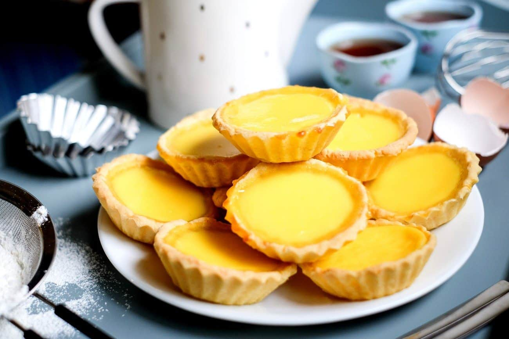

Origins
Dan Tat as what the locals call them. We love this mildly sweet treat, and while every day is dan tat day to us, World Egg Day this Friday gives us even more reason to celebrate. Savor these eight things you might know about one of our favorite Asian desserts.
It has English and Portuguese origins. Just as the seemingly quintessential American ketchup has Chinese origins, the seemingly quintessential Chinese dan tat actually has its roots in Great Britain and Portugal. However, both the English and Portuguese versions ultimately come from the king of pastries, France, while the egg tarts you'll find in Chinese restaurants and bakeries today are distinct from their European cousins.
Ingredients
Makes 16 servings
Custard Filling
- 4 eggs, beaten, reserve 2 tablespoons for your pastry dough
- ¾ cup hot water
- tablespoons sugar
- ⅛ teaspoon salt
- ¼ cup evaporated milk
- a dash vanilla extract
Pastry Dough
- 2 cups cake flour
- 1 stick 115 g unsalted butter
- ¼ cup powdered sugar
- 2 tablespoons egg
- ⅛ teaspoon salt
- a dash vanilla extract
Time to make egg tarts!
- For the pastry, in a large bowl, sift flour, sugar, and salt. Then add softened butter. Bring the mixture together with your hands, careful not to knead the pastry dough too much or you will make the pastry tough.
- Whisk the egg yolks and add the 2 tablespoons of beaten yolk to the flour mixture. Bring together until smooth. If the dough is too sticky, coating your hands with flour will help. Cover with plastic wrap and then refrigerate for 30 minutes, or until the dough is firm.
- To make the custard filling, melt sugar and salt with hot water. Mix until dissolved then let cool.
- Add the rest of the beaten egg yolk. Stir in sugar water and also evaporated milk (if adding vanilla, add now). Stir and combine everything well.
- Strain the filling to ensure no lumps. Chill in the refrigerator.
- Preheat the oven to 400˚F / 200˚C.
- Take the dough out and divide into 16 equal portions. Spray the tart pan with a light coating of oil. Take one portion of your dough and roll it into a ball and place in your tart shell. Press the shell into the pan with your fingers. Try to make the wrapper uniform in thickness and avoid a thick bottom. Repeat to finish all.
- Pour the custard filling into the shells until it is about 80% full. Bake for 15 to 20 minutes until the surface becomes golden brown and a toothpick can stand in the egg tart.
- Cool down for several minutes and then take the egg tarts out of the pan. Serve while still warm.
- Enjoy!